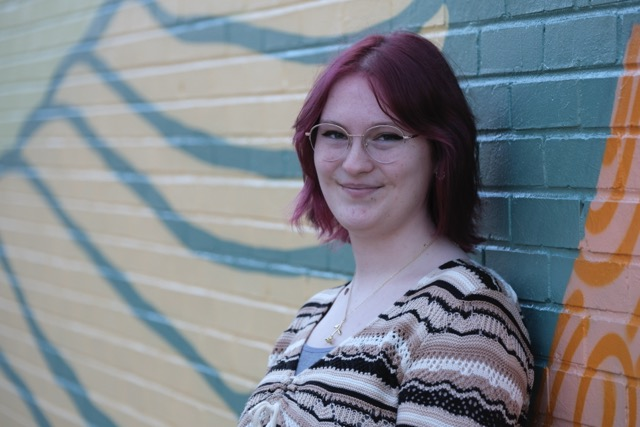

Ash Conley Web Resume

Contact Information
Phone Number : 859 - 629 - 8997
Email Address : conle2ae@dukes.jmu.edu
696 Winter Hill Lane, Lexington KY, 40509
Skills
- Design Thinking and Creative Skills
- Collaboration Skills
- Writing and Editing skills
- Proficient in Adobe Illustrator, Adobe Photoshop, and Adobe Indesign
- Proficient in the program Canva
- Familiar with basic HTML and CSS
Education
August 2022 - May 2026
- School of Media Arts and Design
- Bachelor of Arts
- Major in Interactive Design
- Minor in Writing, Rhetoric and Technical Communications
- Minor in English
- Expected Graduation in May 2026
- 3.4 current GPA
Work Experience and Projects
Media and Marketing Intern
Sep. 2023 - May 2024, Sep. 2024 - Jan. 2025
- Created content for and uploaded to our social media pages
- Created content to be printed and shared (such as newsletters, pamphlets and stickers)
- Updated the information on our website as needed.
Creator
October 2024 - Current
- Created and maintained an independent website based on research and original content to support mental health in college students in a creative way.
- Created and maintained an accompanying Instagram page, and posted content here.
Station Arts Student Leader
2019-2022
- Was a student leader for a memorial project in honor of the late superintendent Emmanuel Caulk.
- Student leader for the "Horse-Mania" project.
- Assistant student leader for the "Equity Rising" Keenland horse.
- Worked on Graphic Design needs for programs in the school